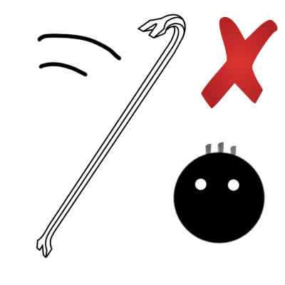
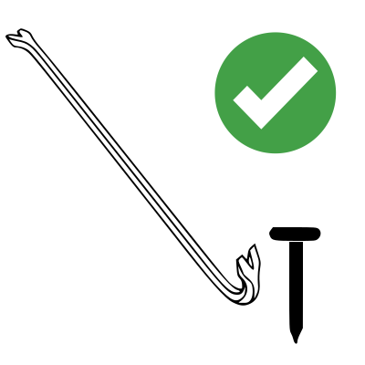
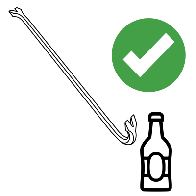

Důkladně si pročtěte návod a uschovejte ho pro pozdější použití.
Použijte vhodné bezpečnostní pomůcky jako jsou rukavice na ochranu rukou a ochranné brýle pro ochranu očí. Ujistěte se, že otevíraná láhev je postavena na stabilním povrchu, aby bylo zabráněno jejímu sklouznutí. Při používání páčidla buďte velmi opatrní, aby nedošlo k náhlému sklouznutí, nebo pohybu, který by mohl vést ke zranění. Ujistěte se, že se ve Vašem bezprostředním okolí nenachází žádné osoby nebo jiné objekty, které by mohly být ohroženy sklouznutím páčidla, nebo nenadálým ulomením hrdla otevírané láhve. Před otevíráním láhve pečlivě zkontrolujte, zda na ní nejsou trhliny nebo jiná slabá místa. Při přikládání páčidla k uzávěru láhve používejte kontrolovanou a rovnoměrnou sílu. Síla nesmí být nadměrná, aby nezpůsobila náhlé rozbití láhve. Pokud došlo při otevírání láhve k jejímu poškození, ujistěte se, že uklidíte všechny střepy a nápoj konzumujte výhradně po jeho důkladné prohlídce, zda neobsahuje zbytky rozbité láhve a po jeho přelití do čisté nádoby. Před užitím páčidla k tomuto účelu se ujistěte, že ve svém okolí nemáte věc pro tento účel vhodnější. Doporučovány bývají obvykle nástroje zvané otvírák na pivo, který je pro tento účel přímo vyvinut. Udržujte mimo dosah dětí.
Zařízení není určeno pro legitimní účely jako jsou kutilské projekty nebo domácí úpravy. Naše společnost neodpovídá za použití páčidla k jakýmkoli nezákonným činnostem. Využití páčidla k takovému účelu může nést uživateli právní důsledky.



Páčení
Před pokračováním ve studiu tohoto manuálu si prosím ověřte, že vaše práce je v souladu se všemi platnými právními předpisy týkajícími se ničení, ať už svého, tak hlavně cizího majetku.
Postup páčení
Jako základní postup při páčení je považována ta skutečnost, páčidlo umístit mezi objekty nebo materiály, které od sebe chcete oddělit a následě vyvinout dostačenou sílu, která od sebe, skrze páčidlo, tyto objekty nebo materiály oddělí. V této části jsou uvedeny příkladné situace, kdy se páčidlo může použít.
1. Vyberte konec (zobák) páčidla, který je vhodný pro oddělení objektů.
2. Vložte zahnutý zobák páčidla do prostoru mezi objekty. Vlož ho tak hluboko, jak to jen půjde.
3. Aplikujte sílu na páčidlo tak, aby zobák páčidla začal objekty od sebe oddělovat.
4. Po dokončení páčení vyndejte páčidlo z prostoru mezi oddělovanými objekty.
Páčik radí...
Páčení může být využito i v kutilských situacích, jako je vyjímání hřebíku z dřeva. Pomocí páčidla, například páčky nebo krumpáče, lze postupně a opatrně vyndat hřebík ze dřeva. Důležité je aplikovat rovnoměrný tlak a postupovat opatrně, aby nedošlo k poškození dřeva nebo jiné části konstrukce.
Páčik varuje...
Páčení zámků může být v některých jurisdikcích regulováno zákony. Před prováděním páčení se ujistěte, že máte povolení a znalost příslušných právních předpisů. Při praktikování páčení se ujistěte, že neškodíte majetku, který nepatří vám, a že nedochází k porušení soukromí.
Profesionální otevírání piva páčidlem
Otevírání piva páčidlem je dovednost, která vyžaduje precizní techniku a znalost principů mechaniky víčka piva. Tento manuál poskytuje komplexní informace a postupy pro úspěšné otevírání piva páčidlem. Před pokračováním ve studiu tohoto manuálu si prosím ověřte, že jste seznámeni se všemi platnými právními předpisy týkajícími se konzumace alkoholu.
1. Ujistěte se, že máte k dispozici čisté páčidlo a láhev piva, kterou chcete otevřít. Zkontrolujte, zda je lahve piva dobře uzavřená a zda není poškozená.
2. Uchopte láhev piva pevně v jedné ruce a umístěte páčidlo pod okrajem víčka v druhé ruce. Zvolte úhel, pod kterým budete páčidlem působit na víčko, aby byl dosažen maximální účinek.
3. S pečlivým tlakem a kontrolou manipulujte s páčidlem pod okrajem víčka. Postupně zvedejte páčidlem víčko až do okamžiku, kdy se uzávěr uvolní od lahve.
4. Jakmile je uzávěr odstraněn, opatrně odklopte víčko piva a připravte se na jeho konzumaci. Ujistěte se, že nejsou žádné ostré hrany, které by mohly způsobit zranění.
Páčik radí...
Otevřené pivo konzumujte zodpovědně a s ohledem na své zdraví a okolní prostředí. Nepožívejte alkohol, pokud jste řidič nebo pokud konzumace alkoholu může ohrozit vaše zdraví.